06 / 사용 방법
설정 전체 항목
더보기 → 운영·설정 → 설정에서 엽니다. 설정창의 문서, 배송·식수, 화면, 데이터 관리 순서로 설명합니다.
설정에서 찾기

설정은 4개 탭의 21개 항목으로 나뉩니다. 탭을 선택하고 필요한 항목을 누르세요.
| 탭 | 설정 · 누르면 설명으로 이동 |
|---|---|
| 문서 | 문서 양식 · 문서 항목 설정 · 공통 제공기관 · 생성 Excel 비밀번호 · 문서 저장 폴더 · 출력 파일 보관기간 |
| 배송·식수 | 식종별 배송 기본값 · 배송순서 입력 방식 · 식수·청구서 설정 · 중지 표시 기간 · 일시중지 자동변환 |
| 화면 | 배송대타 칼럼 표시 · 다른 사용자 화면 설정 불러오기 |
| 데이터 관리 | 운영 데이터 위치 · 자동 백업 폴더 · 운영 파일 비밀번호 변경 · 구주소 업데이트 · 주소 API 키 · 초기 명단 적용일 · 가구 묶기 기준 · 가구 소속 기록 복구 |
문서 양식
여는 위치 · 설정 → 문서 → 문서 양식

- 사용할 급식 또는 행복도시락 양식을 선택합니다.
- 아래 이 양식 사용을 누릅니다. 문서 만들기에서 선택한 양식으로 파일을 새로 생성합니다.

- 일일식수·배송목록의 양식을 고치려면 해당 문서의 양식 확인/수정을 엽니다.
- Excel에서 양식 열기를 눌러 글꼴·색·테두리 등을 수정합니다. 파일 안의 수정 안내 시트를 먼저 확인합니다. 따로 받은 양식은 다른 양식 파일 선택으로 고릅니다.
- Excel에서 저장하고 닫은 뒤 이 창의 이 양식 사용을 누릅니다. 해당 업체 기본 양식으로 돌아가려면 기본 양식 사용을 선택한 뒤 저장합니다. 행복도시락 일일식수는 위에서 조식·석식 양식 또는 중식 양식을 먼저 선택합니다.
배송 양식 파일 연결은 이 PC의 운영 파일·급식/행복도시락별로 기억합니다. 창에서 취소해도 Excel에서 이미 저장한 수정 내용은 되돌아가지 않습니다.
청구서·확인서에 어떤 명단 값을 넣을지는 문서 항목 설정에서 정합니다. 양식 선택과 출력 칼럼 연결은 서로 다른 설정입니다.
파일을 바꾸는 자세한 순서와 수정 가능한 범위는 7. 템플릿 변경을 참고하세요.
확인서: 1식짜리 먼저, 2식·3식 순으로 배치를 체크하고 이 양식 사용을 누르면 관할동별 시트 안에서 1식 가구부터 2식·3식 순으로 배치합니다. 여기서 식수는 확인서 블록의 가구원 수 기준입니다. 같은 식수끼리의 기존 순서와 가구원 내부 순서는 유지합니다. 기본은 해제이며 새로 만드는 확인서부터 적용됩니다.
확인서: 다음 달로 넘어가는 토·일요일을 마지막 주 날짜에 포함을 체크하고 이 양식 사용을 누르면, 월말이 금요일·토요일인 달의 마지막 주를 다음 달 일요일까지 표시합니다. 예를 들어 2026년 10월에는 체크하면 10.26~11.01, 해제하면 10.26~10.31로 표시합니다. 2026년 7월처럼 다음 달 1·2일이 토·일이면 07.27~08.02로 표시합니다. 기본은 해제입니다. 월~일 주차 기준은 유지하며 연말에도 적용합니다. 다른 요일로 끝나는 달은 바뀌지 않습니다.
이 옵션은 날짜 표시만 바꿉니다. 해당 주말의 식수 포함 여부는 식수·청구서 설정의 이번 달에 묶어 배송하는 다음 달 식수 포함을 따릅니다. 운영 파일에 저장되어 양식을 바꿔도 유지되며 새로 만드는 확인서부터 적용됩니다. 저장하지 않고 닫으면 기존 선택을 유지합니다.
문서 항목 설정
여는 위치 · 설정 → 문서 → 문서 항목 설정

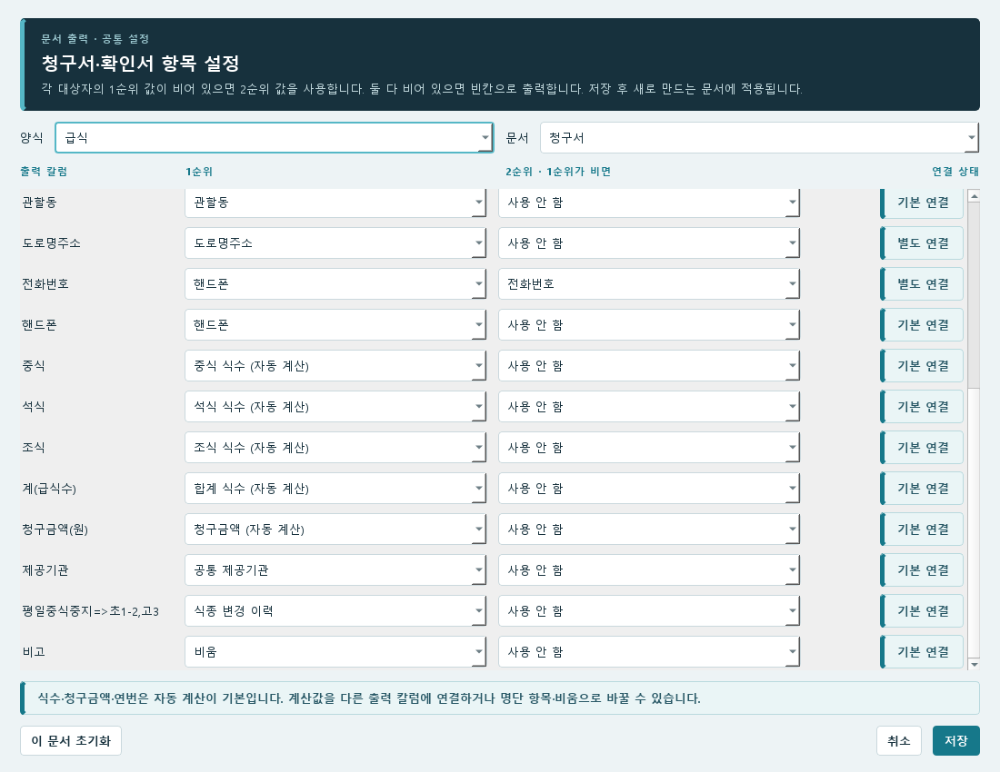
- 양식과 문서를 고르고 왼쪽에서 바꿀 출력 칼럼을 찾습니다.
- 1순위에 넣을 명단 항목·자동 계산값·식종 변경 이력을 고릅니다. 그 값이 없을 때 다른 값을 넣으려면 2순위를 정합니다.
- 저장한 뒤 파일을 새로 만들어 연결한 값을 확인합니다.
생성 파일에 칼럼 연결에 전화번호 대체값, 자동 계산 칼럼 이동, 이력·개인 비고 연결과 초기화 방법을 정리했습니다.
공통 제공기관
여는 위치 · 설정 → 문서 → 공통 제공기관

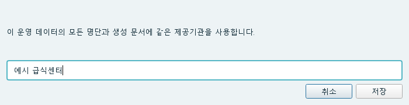
- 입력칸의 기관 이름을 확인하고 사용할 이름으로 고칩니다.
- 저장을 누릅니다.
- 새로 만든 문서에서 제공기관 이름을 확인합니다.
같은 운영 파일을 사용하는 담당자에게 공통으로 적용됩니다. 청구서의 제공기관 칸을 다른 명단 항목에 연결했다면 해당 연결값이 출력됩니다.
생성 Excel 비밀번호
여는 위치 · 설정 → 문서 → 생성 Excel 비밀번호

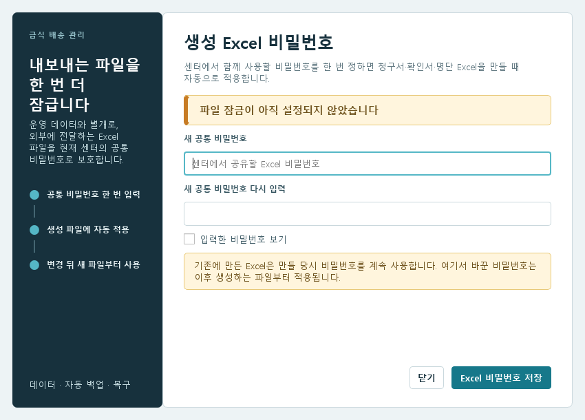
- 이미 설정된 비밀번호를 확인하려면 현재 비밀번호 보기를 누릅니다. 필요한 경우 복사를 사용할 수 있습니다.
- 바꾸려면 새 공통 비밀번호와 새 공통 비밀번호 다시 입력에 같은 값을 입력하고 Excel 비밀번호 저장을 누릅니다.
- 새로 만든 Excel 파일을 새 비밀번호로 열어 확인합니다.
기존에 만든 Excel은 만들 당시 비밀번호를 사용합니다. 프로그램의 운영 파일을 열 때 쓰는 비밀번호는 아래의 운영 파일 비밀번호 변경에서 따로 관리합니다.
문서 저장 폴더
여는 위치 · 설정 → 문서 → 문서 저장 폴더

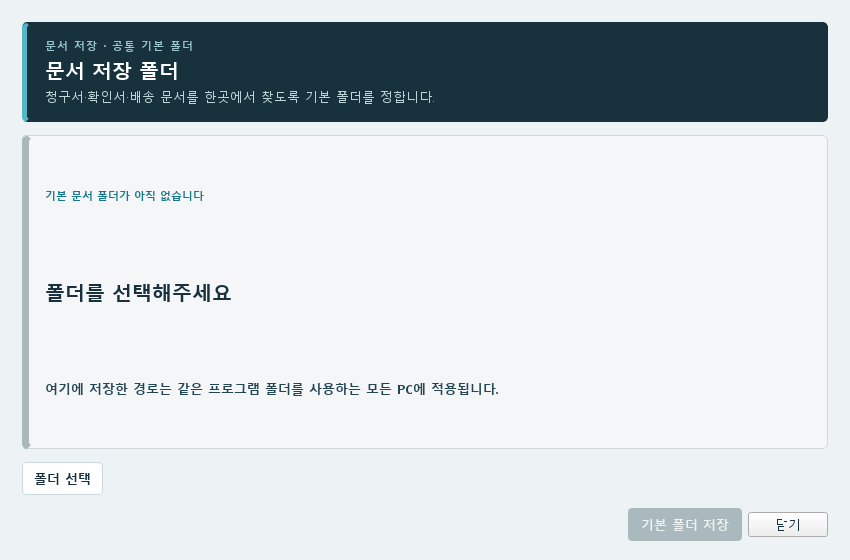
- 폴더 선택 버튼으로 문서를 모아둘 폴더를 고릅니다.
- 화면에 표시된 폴더 이름과 전체 경로를 확인하고 기본 폴더 저장을 누릅니다.
- 문서 만들기의 저장 위치 화면에 해당 폴더가 표시되는지 확인합니다.
같은 프로그램 폴더를 사용하는 PC에 공통으로 적용됩니다. 기존에 만든 문서를 이 폴더로 옮기는 기능은 아닙니다.
출력 파일 보관기간
여는 위치 · 설정 → 문서 → 출력 파일 보관기간
- 화면에 표시된 output 폴더 경로를 확인합니다.
- 보관기간을 개월 수로 정합니다. 기본은 1개월이며 자동 정리를 끄려면 자동 삭제 안 함을 선택합니다.
- 저장을 누릅니다. 다음 확인부터 변경한 기간을 사용합니다.
식종별 배송 기본값
여는 위치 · 설정 → 배송·식수 → 식종별 배송 기본값

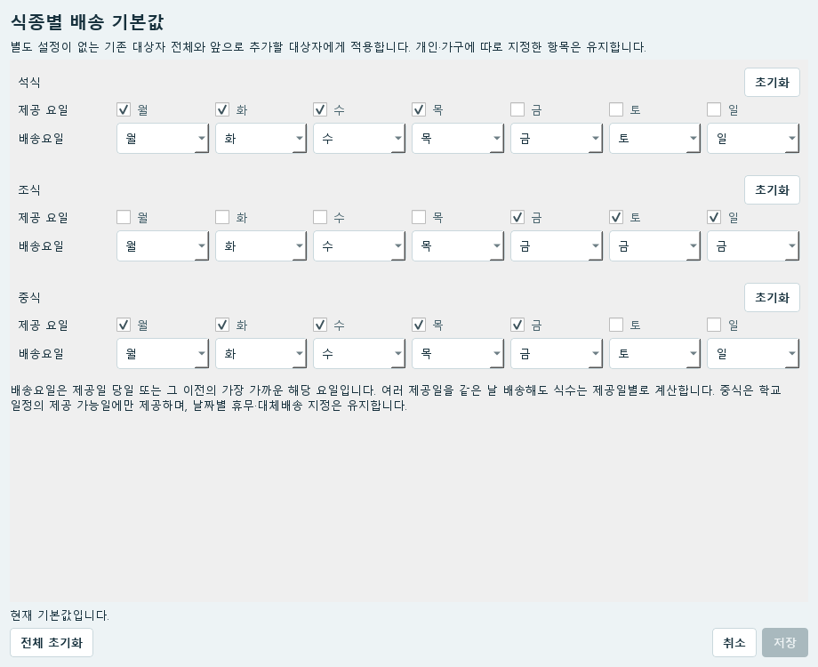
- 석식·조식·중식에서 제공 요일을 확인합니다. 식사를 제공할 요일을 체크합니다.
- 체크한 제공 요일에 대응하는 배송요일을 고릅니다. 예: 금·토·일 조식을 금요일에 함께 배송.
- 다른 식종의 요일도 확인한 뒤 저장을 누릅니다.
별도 설정이 없는 기존 대상자와 앞으로 추가할 대상자에게 적용됩니다. 개인·가구별로 따로 지정한 항목은 유지됩니다. 중식은 학교 일정도 함께 적용합니다.
식종 하나를 기본값으로 돌리려면 그 식종의 초기화, 모두 되돌리려면 전체 초기화를 누른 뒤 저장합니다. 한 사람만 바꿀 때는 명단 오른쪽 배송 설정을 사용합니다.
배송순서 입력 방식
설정 위치 · 설정 → 배송·식수 → 배송순서 입력 방식
현재 배송순서는 더보기 → 기사·배송 → 배송순서관리에서 기사와 식종을 고른 뒤 행을 드래그해 바꿉니다. 배송순서관리 사용 방법을 따라 진행하세요.
설정 화면에는 식종별로 따로 입력과 한 번 입력해 모든 식종에 적용이 남아 있지만, 현재 배송순서관리의 드래그 변경에는 적용되지 않습니다. 설정을 바꿔도 기존 순서는 그대로이며, 명단에서 숫자를 직접 입력하거나 통합 입력창을 여는 기능은 현재 제공하지 않습니다.
식수·청구서 설정
여는 위치 · 설정 → 배송·식수 → 식수·청구서 설정

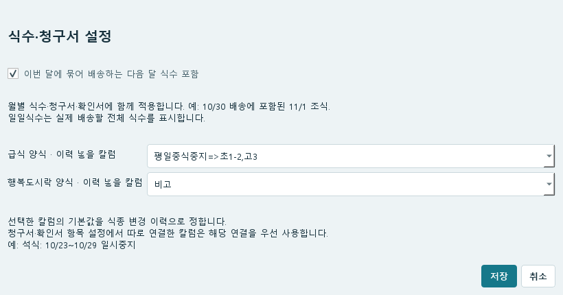
- 이번 달에 묶어 배송하는 다음 달 식수 포함 여부를 정합니다. 예: 10월 30일에 함께 배송하는 11월 1일 조식.
- 급식·행복도시락 각각에서 식종 변경 이력을 넣을 기본 칼럼을 고릅니다. 기본 출력이 필요 없으면 출력 안 함을 선택합니다.
- 저장한 뒤 월별 식수 또는 새 청구서·확인서에서 결과를 확인합니다.
다음 달 식수 포함을 켜면 청구서·확인서는 실제 배송일 기준으로, 끄면 식사일 기준으로 계산합니다. 월별 조회의 보기 기준은 그 화면에서 따로 선택합니다. 일일식수는 실제 배송할 전체 식수를 표시합니다. 항목 설정에서 따로 연결한 칼럼은 그 연결을 우선 사용합니다.
중지 표시 기간
여는 위치 · 설정 → 배송·식수 → 중지 표시 기간

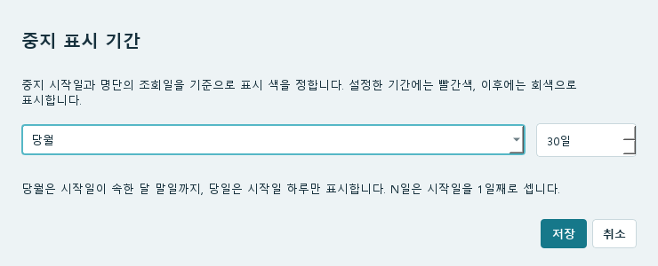
- 당월, 당일, N일 중 하나를 고릅니다.
- N일을 골랐다면 일수를 입력합니다. 중지 시작일을 첫째 날로 셉니다.
- 저장한 뒤 명단의 조회 날짜를 바꾸어 표시를 확인합니다.
당월은 중지 시작일이 속한 달의 말일까지, 당일은 시작일 하루만 표시합니다. 색을 표시하는 기간이며 실제 중지 기간을 바꾸지는 않습니다. 이 PC의 해당 운영 파일에 적용됩니다.
일시중지 자동변환
여는 위치 · 설정 → 배송·식수 → 일시중지 자동변환

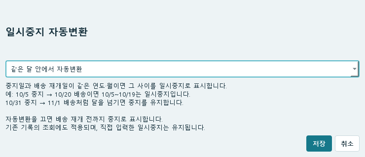
- 중지 기간을 일시중지로 계산하려면 같은 달 안에서 자동변환을 선택합니다.
- 중지로 유지하려면 자동변환 안 함을 선택합니다.
- 저장한 뒤 해당 날짜의 명단과 새로 만든 문서를 확인합니다.
예를 들어 종료일 없이 10월 5일부터 중지하고 10월 12일부터 배송을 재개하면, 기본 설정에서는 5~11일을 일시중지로 계산합니다. 재개일이 11월이면 중지를 유지합니다. 직접 입력한 일시중지는 바뀌지 않습니다.
이미 저장된 중지·배송 원본 기록도 지우지 않습니다. 기존 기록을 조회하고 계산하는 방식에 적용됩니다.
배송대타 칼럼 표시
여는 위치 · 설정 → 화면 → 배송대타 칼럼 표시

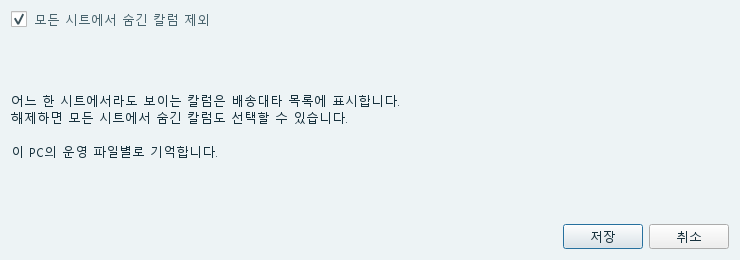
- 보이는 칼럼만 고르려면 모든 시트에서 숨긴 칼럼 제외를 체크합니다.
- 숨긴 칼럼도 필요하면 체크를 해제하고 저장합니다.
- 문서 만들기 → 배송목록을 다시 열고 출력할 항목을 선택합니다.
한 시트에서라도 보이는 칼럼은 제외되지 않습니다. 이 설정은 선택 목록의 범위이며, 실제 출력 여부·순서·대체값은 배송대타를 만들 때 정합니다.
다른 사용자 화면 설정 불러오기
여는 위치 · 설정 → 화면 → 다른 사용자 화면 설정 불러오기

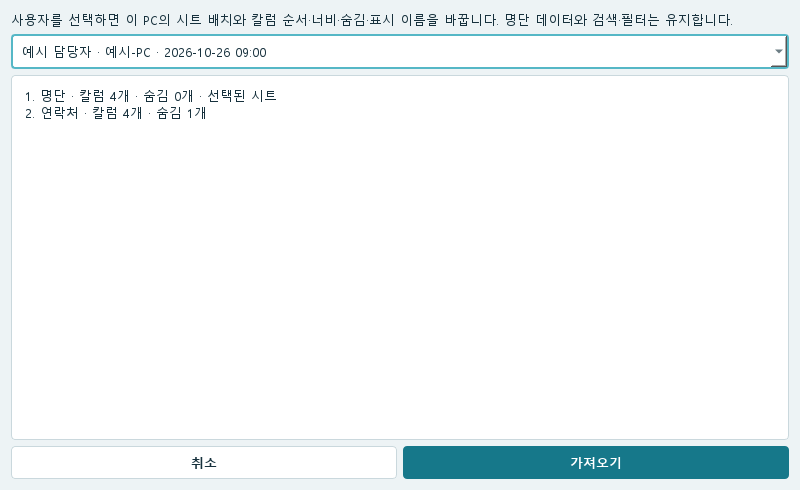
- 같은 운영 파일을 사용하는 사람 중 화면 배치를 가져올 사용자를 고릅니다.
- 사용자 이름·PC 이름·저장 시각과 시트 목록·숨긴 칼럼 수를 확인합니다.
- 불러오기를 적용하고 시트 이름·순서·칼럼 배치를 확인합니다.
현재 PC의 시트와 칼럼 순서·너비·숨김·표시 이름이 선택한 사용자의 배치로 바뀝니다. 명단 값과 다른 사용자의 원본 화면 설정은 그대로입니다.
가져올 사람이 없으면 그 담당자가 같은 운영 파일을 이 기능이 있는 버전으로 열었는지 확인합니다. 시트를 직접 꾸미는 방법은 시트·칼럼 활용에서 볼 수 있습니다.
운영 데이터 위치
여는 위치 · 설정 → 데이터 관리 → 운영 데이터 위치

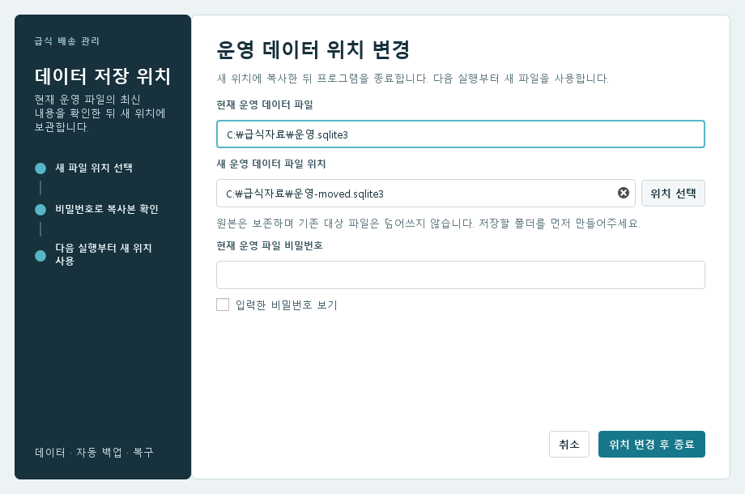
- 저장할 폴더를 준비한 뒤 위치 선택으로 새 운영 데이터 파일의 위치와 이름을 고릅니다.
- 현재 운영 파일 비밀번호를 입력합니다.
- 위치 변경 후 종료를 누릅니다. 복사본 확인이 끝나고 프로그램이 종료되면 다시 실행합니다.
- 새 위치의 운영 파일을 사용하고 있는지 확인합니다.
원본은 보존하며 새 위치에 복사본을 만들어 다음 실행부터 사용합니다. 새 위치에 이미 있는 파일을 덮어쓰지는 않습니다. 문서 저장 폴더·백업 폴더 변경과 구분해서 사용하세요.
자동 백업 폴더
여는 위치 · 설정 → 데이터 관리 → 자동 백업 폴더

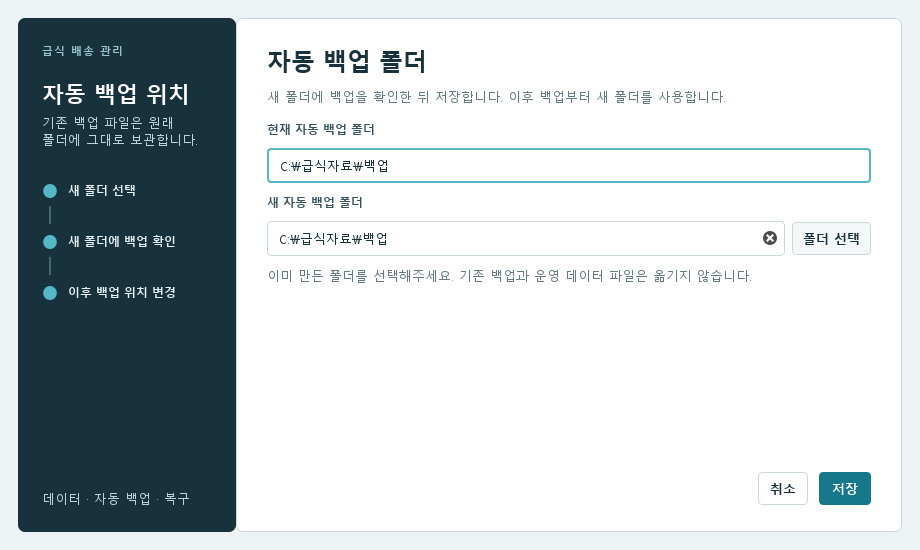
- 새 백업을 보관할 폴더를 미리 만듭니다.
- 폴더 선택에서 새 폴더를 고르고 저장을 누릅니다.
- 새 폴더에 백업을 만들고 읽을 수 있는지 확인하는 과정이 끝날 때까지 기다립니다. 오류가 나오면 폴더 연결과 쓰기 권한을 확인합니다.
이후 백업부터 새 폴더를 사용합니다. 기존 백업은 이전 폴더에 남고, 현재 운영 파일의 위치도 바뀌지 않습니다.
자동 백업은 운영 파일별 암호화 백업 파일 하나(.mealreplica)에 누락된 저장 내용을 반영합니다. 다른 곳에 복사할 때는 함께 있는 비밀번호 정보 파일도 복사하세요. 현재 일반 시작 화면에는 백업 파일을 고르는 복원 버튼이 없습니다. 예전 압축 백업을 포함해 백업 파일 자체를 복원해야 한다면 담당자에게 요청하세요.
저장 직후 자동 백업이 처음 실패하면 팝업 없이 기록하고, 다음에 운영 파일을 열 때 다시 시도합니다. 이전 실패가 계속되면 원인과 해결 방법을 안내합니다. 운영 파일 저장 성공과 백업 실패는 구분되므로 명단을 다시 입력하기 전에 저장된 내용을 확인하세요.
운영 파일 비밀번호 변경
여는 위치 · 설정 → 데이터 관리 → 운영 파일 비밀번호 변경

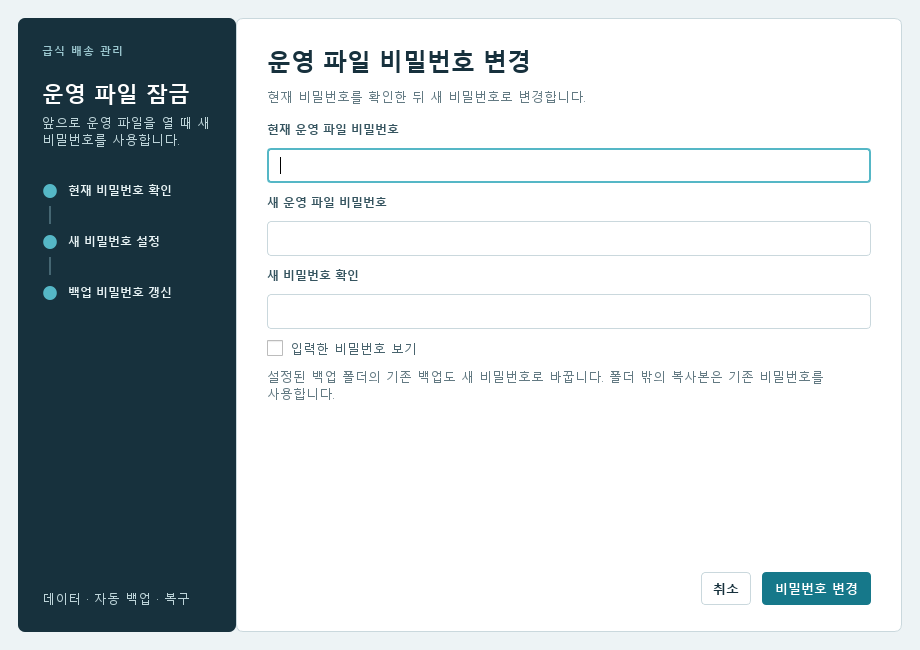
- 현재 운영 파일 비밀번호를 입력합니다.
- 새 운영 파일 비밀번호와 새 비밀번호 확인에 같은 값을 입력합니다.
- 비밀번호 변경을 누르고 완료 안내를 확인합니다. 다음에 운영 파일을 열 때 새 비밀번호를 사용합니다.
설정된 백업 폴더의 기존 백업도 새 비밀번호로 바꿉니다. 완료 안내에 백업 갱신 실패가 나오면 표시된 파일을 확인하세요. 그 폴더 밖에 따로 복사한 파일은 기존 비밀번호를 사용합니다.
구주소 업데이트
여는 위치 · 설정 → 데이터 관리 → 구주소 업데이트

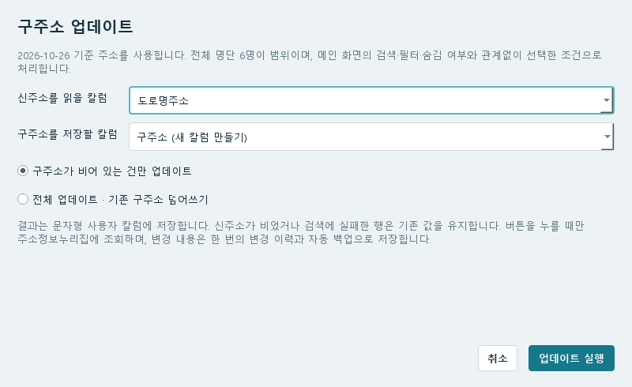
- 주소 API 키를 먼저 설정합니다.
- 신주소를 읽을 칼럼 하나를 고릅니다. 기본값은 도로명주소입니다. 선택한 주소 앞에 경기도 성남시를 붙여 검색하며 관할동은 자동으로 붙이지 않습니다. 예를 들어 분당구 가상로 1은 경기도 성남시 분당구 가상로 1로 조회합니다. 이미 경기도 성남시가 있으면 중복하지 않고, 성남시로 시작하면 경기도만 붙입니다. 빈 주소는 건너뜁니다.
- 구주소를 저장할 칼럼을 고릅니다. 구주소 칼럼이 없으면 구주소 (새 칼럼 만들기)를 선택합니다. 입력·저장 칼럼은 서로 달라야 합니다.
- 빈칸만 채울 때는 구주소가 비어 있는 건만 업데이트를 선택합니다. 기존 구주소도 바꿀 때는 전체 업데이트 · 기존 구주소 덮어쓰기를 선택합니다.
- 업데이트 실행을 누릅니다. 1초 이상 걸리면 진행창의 막대 위에 처리 인원 / 전체 인원 · 진행률(%)이 표시됩니다. 건너뜀·동일·조회 실패도 처리 인원에 포함됩니다.
- 조회 처리 100% 뒤 저장·자동 백업이 끝나면 결과창에서 변경·동일·건너뜀·실패 인원과 실패 대상을 확인합니다.
주소 API 키
여는 위치 · 설정 → 데이터 관리 → 주소 API 키

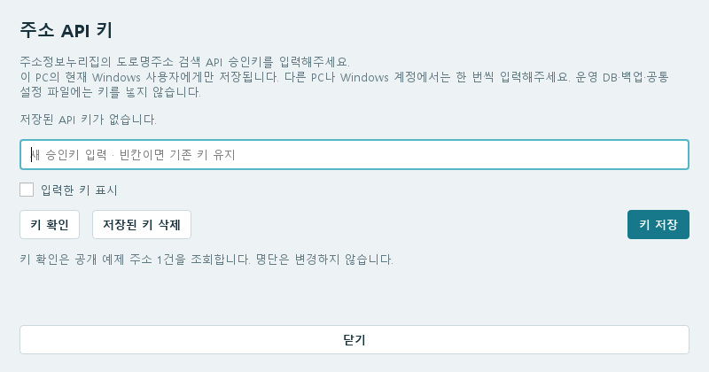
- 주소정보누리집에서 받은 도로명주소 검색 API 승인키를 입력합니다.
- 키 확인을 눌러 검색이 되는지 확인한 뒤 키 저장을 누릅니다. 확인만 누르면 새 키는 저장되지 않습니다.
- 창을 닫고 구주소 업데이트에서 사용할 칼럼·범위를 고른 뒤 실행합니다.
키는 이 PC의 현재 Windows 사용자에게 저장됩니다. 다른 PC나 Windows 계정에서는 따로 입력해야 합니다. 키가 잘못되었거나 사용 기간이 지났으면 새 키로 바꿔 저장합니다. 더 이상 쓰지 않을 때는 저장된 키 삭제를 사용합니다.
초기 명단 적용일
여는 위치 · 설정 → 데이터 관리 → 초기 명단 적용일

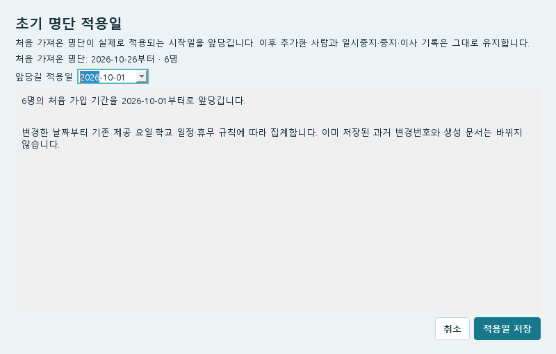
- 화면의 처음 가져온 명단 날짜를 확인합니다.
- 앞당길 적용일을 입력합니다. 처음에는 가져온 달의 1일을 제안합니다.
- 변경할 인원과 유지·제외하는 항목을 읽고 적용일 저장을 누릅니다.
- 앞당긴 날짜의 명단이나 월별 식수를 다시 확인합니다.
처음 가져온 명단의 시작일을 정정할 때 사용합니다. 이후 추가한 사람이나 따로 변경한 기간은 그대로 유지합니다. 바꿀 대상이 없으면 저장할 수 없습니다.
가구 묶기 기준
여는 위치 · 설정 → 데이터 관리 → 가구 묶기 기준

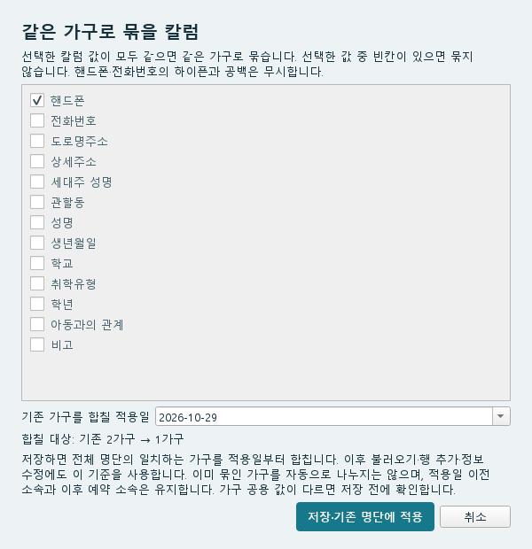
- 같은 가구로 묶을 칼럼을 하나 이상 선택합니다. 삭제된 칼럼이 선택되어 있으면 해제하고 사용할 칼럼을 다시 고릅니다. 기본은 핸드폰입니다. 도로명주소·상세주소와 사용자 추가 칼럼도 각각 선택할 수 있습니다.
- 여러 칼럼을 선택하면 선택한 값이 모두 같은 사람을 묶습니다. 선택한 값 중 빈칸이 있으면 묶지 않으며 핸드폰·전화번호의 하이픈·공백은 무시합니다.
- 기존 가구를 합칠 적용일과 합칠 가구 수를 확인합니다. 처음에는 명단 조회 날짜를 표시합니다.
- 저장·기존 명단에 적용을 누릅니다. 합칠 가구의 공용 값이 다르면 이어지는 화면에서 값을 정합니다. 중간에 취소하면 기준과 가구 모두 저장하지 않습니다.
기존 명단에 적용하면 검색·필터로 숨겨진 사람을 포함해 전체 명단에서 일치하는 가구를 합칩니다. 합칠 가구가 없으면 기준만 저장합니다. 같은 운영 파일을 사용하는 담당자에게 공통으로 적용됩니다.
월중에 가구를 합쳐도 청구서·확인서를 만들 수 있습니다. 월간 문서의 가구 묶음은 해당 월 말일의 소속을 따르며 식수·금액과 과거 소속 기록은 유지됩니다.
핸드폰이 같은데 별도 가구로 남아 있으면 이 화면에서 핸드폰을 선택해 기존 명단에 적용하세요. 저장한 기준은 이후 명단 불러오기·행 추가·정보 수정에도 사용합니다. 기준 칼럼 선택과 가구 공용 설정은 별개입니다.
가구 소속 기록 복구
여는 위치 · 설정 → 데이터 관리 → 가구 소속 기록 복구

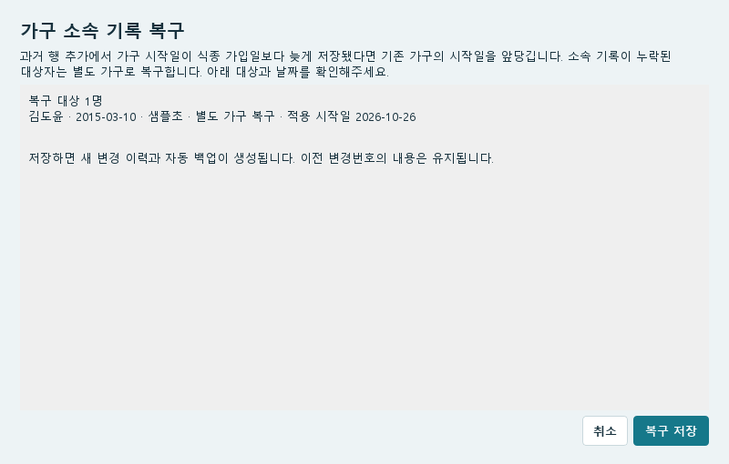
- 복구 대상의 성명·생년월일·학교와 적용 시작일을 확인합니다.
- 기존 가구의 시작일을 앞당기는지, 소속이 없어 별도 가구로 복구하는지 확인합니다. 제외 대상도 함께 읽습니다.
- 내용이 맞으면 복구 저장을 누릅니다. 복구할 대상이 없으면 창을 닫습니다.
과거 행 추가·방학 중식 불러오기에서 소속이 빠졌거나, 처음 가구 시작일이 가입일보다 늦은 경우를 정정합니다. 이후 소속을 바꾼 사람까지 임의로 다시 묶지는 않습니다. 저장하면 새 변경 이력과 자동 백업이 생깁니다.